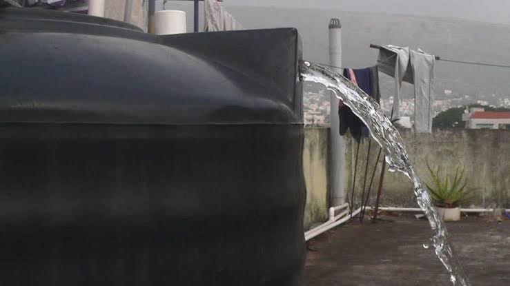

Home automation · Product · UI/UX
H2O Connect
A water monitoring system a household or industry can trust to run itself. One that shows what it is about to do, proves what it just did, and hands control straight back the moment something looks wrong.
Outcomes
- UX research
- Product ecosystem
- Design system
- Mobile app
- Working prototype


Context
Municipal water in most Indian cities runs for a few hours a day. Households store it in an overhead tank and refill it with a switch downstairs, with no gauge, timer or warning. Every problem in this project sits between water arriving and someone remembering to pump it.
< 6 hrs a day
Typical piped supply in many Indian cities. Water is scheduled, not continuous.
MIT Tata Center for Technology & Design2 hrs at most
What most people in Indian towns receive on a normal day. Some get water only a few days a week.
World Bank, 24×7 Water Supply FAQ73.9% of rural homes
Now have a tap connection. The problem is moving from the street into the house.
PIB / Jal Jeevan Mission, 2024

Research
Pump routines are hard to recall accurately, so the research observed the routine itself: the switchboard, the walk to the terrace, and the judgement of when the tank is full. Four methods, run in sequence.
01
Home visits
8 households in Roorkee and Delhi NCR. One full fill cycle watched in each home, from switch on to switch off.
What it showed · The 12 minute gap
02
Switchboard shadowing
Sat with whoever usually runs the pump and noted every check, guess and correction, without prompting.
What it showed · The checking habit
03
Trade interviews
3 plumbers and 2 electricians on what actually fails: dry runs, burnt out motors, corroded float switches.
What it showed · Installation limits
04
Competitor teardown
6 products on sale today: float switches, timer boxes and two app connected controllers.
What it showed · The trust gap
Study status
Participant numbers and quotes on this page are illustrative, written from the brief rather than taken from field notes.
Stakeholders
In most homes one person carries the whole job, and everyone else notices only when it fails. That split turns a tank monitor into a product for the whole household.
Primary · runs the system
The pump keeper
Usually one adult. Runs the motor, takes the blame, and is the only one who knows the tank’s quirks.
Secondary · lives with the result
Everyone else at home
Family, tenants, house help. They find the problem at the tap, not the tank, and can’t fix it.
Tertiary · sets the limits
Plumber, electrician, RWA, power company
Decide what can be installed, what is electrically safe, when water arrives and what power costs.
What this changed
Anyone in the home can read the app on first open, so the tank’s state sits in one card at the top rather than behind a menu. Manual control never goes away: plumbers and electricians warned that the fastest way to lose a household is to make the wall switch feel replaced.
Personas
Three archetypes drawn from the home visits. Each tests a different promise of the product, and every screen is reviewed against all three.
Meera47
The pump keeper
Roorkee. Three floors, a joint family of seven. Has run the pump twice a day for nine years.
Owns the tension Trust
“I know the sound it makes when it’s nearly full. I don’t trust anything else.”
Needs
- See the level without climbing to the terrace
- Proof the motor actually turned off
Pain points
- Judges the level by the sound of the pipe
- Gets blamed when the tank runs dry at 6am
Rohit29
The optimiser
Gurugram. A rented two bedroom flat with a shared sump. Owns a smart speaker and four smart plugs.
Owns the tension Interoperability
“If it can’t tell me why it did that, I’ll switch it off.”
Needs
- Fills scheduled on cheaper off peak power
- Lives inside the home app he already uses
Pain points
- Automation he can’t inspect or override
- A landlord who won’t allow drilling or rewiring
Suresh62
The sceptic
Delhi. A ground floor flat, and he looks after the building. Runs the pump by hand, always.
Owns the tension Accessibility
“The switch is downstairs. That’s where I’ll be.”
Needs
- The wall switch keeps working, untouched
- Readable at arm’s length, without glasses
Pain points
- Small text and icon only buttons
- Fear of the motor running dry and burning out
Empathy map
Mapped from the household with the widest gap between stated and observed behaviour. The pump keeper describes the routine as simple, yet checks the tank four times in a single cycle.
“The tank’s nearly full, I can hear it.”
“Don’t switch it on, I already did.”
“Last time it ran dry, the motor burnt out.”
“I just switch it on. It’s not complicated.”
If I forget now, there’s no water at six.
Was that our pump or the neighbour’s?
Automatic things break when nobody’s watching.
Nobody else will notice until the tap runs dry.
Climbs to the terrace to look inside the tank.
Keeps a mental timer while she cooks.
Switches off early on purpose, to be safe.
Sends her son up when her knees hurt.
Responsible by default. Nobody assigned it.
Anxious through the whole evening supply.
Guilty watching water spill off the terrace.
Wary of anything that takes the switch away.
- Water spilling off the terrace when she’s late
- The tank level, only by climbing up to it
- No reading anywhere between the switch and the tank
- The pipe changing pitch as the tank fills
- A hum from the motor, and nothing else
- Complaints at 6am when the taps run dry
Pain
The checking never ends. Even when it works, nothing proves that it worked.
Gain
One glance that settles it, and a record of what happened while she was away.
Journey map
The current journey for a single refill. Most of the pain sits in two moments: the wait, with no information, and the climb to the terrace to check. The rest of the design is built around removing both.
Scroll sideways to see the whole map.

The real cost
Every cycle ends slightly wrong: too early and short, or too late and spilling. Neither outcome is ever measured.
Synthesis
Each row links an observation to what it means and to the design decision it drives. Every later decision traces back to one of these rows.
Observation
Every home could run the pump. None could say what it had done.
Insight
The product isn’t a remote control. It’s a reliable witness that can also act.
Design decision
State, history and evidence come first on every screen. Controls sit below them.
Observation
One runaway cycle sent a family back to the manual switch for good.
Insight
Trust is lost once and rarely earned back. Automation starts on probation.
Design decision
Every automatic action has a visible stop and leaves a receipt.
Observation
Nobody could estimate what one fill costs in electricity.
Insight
Cost is invisible because the bill arrives a month later, cut off from the action.
Design decision
Show units and rupees for each fill, attached to the fill that caused them.
Observation
The job is shared by a household but carried by one person.
Insight
Whoever opens the app may be seeing it for the first time, in the middle of a problem.
Design decision
No setup knowledge needed. The top card explains itself.
Need statement
A household that stores its own water needs to know what the tank and pump are about to do, and to stop them in one tap, so it can leave the system alone without giving up control.
How might we
How might we help a household trust an automated water system enough to stop checking it, while keeping them in control on the days it matters?
Principles
Each principle names what it rules out, so any screen can be checked against it.
01
State before controls
Every screen answers “what’s happening?” before “what can I do?”. The tank card is always first and always largest.
Rules out · A home screen that opens on a power button.
02
Every action leaves a receipt
Anything the system does on its own is logged in plain language, with the rule behind it and a way to change that rule.
Rules out · Silent schedules and automation with no history.
03
Colour means something
Blue is water and only water. Lime is action. Red is only ever a fault. No colour is used just to fill space.
Rules out · Decorative gradients and colour blocked layouts.
04
The wall switch always wins
Software can never put the system in a state the switchboard can’t undo. Manual mode is an equal option, not a fallback.
Rules out · Any flow that traps a household inside the app.
Scope
What was designed, what was deliberately left out, and what a launch would still require.
- Week 1ResearchHome visits, switchboard shadowing, trade interviews and a competitor teardown.
- Week 2SynthesisPersonas, empathy and journey maps, the four insights and the principles.
- Week 3StructureProduct ecosystem, information architecture, user flows and greyscale wireframes.
- Week 4DirectionsThree visual directions scored against the principles. Current sensing reshapes the hardware.
- Week 5System and screensDesign system tokens and components, and the eight final screens.
- Week 6Prove itHTML prototype, walkthroughs and fixes, success metrics and the study plan.
In scope
- The full monitoring and automation model: Automatic, Manual and Smart
- Eight core screens and two alert states
- A token based design system: colour, type, spacing and six component sets
- The hardware architecture and how it connects to smart home platforms
- Watch and smart home surfaces: Apple Watch, Galaxy Watch, HomePod, Echo Show and Nest Hub
- A working HTML, CSS and JS prototype of the core flow
Left out on purpose
- First run setup and sensor pairing, the hardest flow and the next to design
- Multiple properties and landlord accounts
- Billing, subscriptions and warranty
- Languages beyond English, though the type scale is sized for Devanagari
- Anything that needs a trained ML model instead of a designed rule
A launch would still need
- Field tests on real tanks with real sensor noise
- Electrical safety certification for the relay
- A considered first two weeks for Smart mode
- Diary study evidence that explanations reduce checking
- A support path for when the hardware, not the app, is at fault
Product ecosystem
H2o Connect pairs a sonar sensor on the overhead tank with a display and control unit beside the motor switch. It works with the tank, pump and switchboard a home already has, which keeps the upgrade near ₹4,000 instead of a ₹40,000 renovation.
Working prototype
The hardware exists today as a working prototype, built with Dwaj-Tech: a sonar sensor at the tank, and a display and control unit beside the motor switch. Final product design is in progress.
 1
2
3
4
1
2
3
4
Display and control unit
- DisplayLevel, volume and motor state at the switch, readable without a phone.
- Manual and Auto switchA physical mode switch. Manual always wins, which is principle 04 built into the hardware.
- ON and OFF buttonStarts or stops the motor directly, even when the phone or the router is down.
- WiringPower and the motor connection enter from the side, next to the existing switch.
Working prototype. Final product design in progress.
Zero contact sensing
No corrosion.
The sonar measures the air gap from above, so nothing touches the water. There is no float to corrode, the failure plumbers reported most often.
Automated motor control
20 to 40% lower energy bills.
Estimated for large scale facilities, where pumps run longest: the motor runs only when needed, stops at the set level, and shifts to off peak power where tariffs allow.
The kit
Two core units in use today, with two optional modules planned.
01
Tank sensor
Sonar, zero contact
Mounts under the overhead tank lid and measures the air gap with ultrasound, so nothing touches the water and there is nothing to corrode. Reports every 30 seconds at rest and every 5 seconds while filling.
In use today · magnetic mount
02
Display and control unit
Beside the motor switch
Shows level, volume and motor state, with a Manual and Auto switch and an ON and OFF button that work without the app. It switches the motor through a relay and confirms “running” from current draw.
In use today · final design in progress
03
Sump sensor
Planned · same sensor, different mount
The dry run guard. If the sump drops below the pump’s intake, the motor is cut locally, before the app is even told.
Planned add on
04
Inlet valve
Planned · for direct supply homes
For homes fed straight from mains pressure, with no sump. Lets Smart mode close the inlet on a suspected leak instead of only reporting it.
Planned add on · opens if power is lost
Decision architecture
Nothing safety critical depends on the internet. Power, water and broadband all drop regularly, so motor protection runs on the device itself.
Safety
On the device
Decides
- Dry run cut off when the sump drops below the intake
- Overflow cut off at the household’s maximum level
- Thermal and overcurrent trip on the motor
- Relay state held even if every radio is down
- Response time
- Under 200 ms
- Without internet
- Fully works
Control
On the phone
Decides
- Mode: Automatic, Manual or Smart
- Fill levels and quiet hours
- Manual start, stop and one tap abort
- Live level, run time and finish time
- Response time
- Under 1 s on the home network
- Without internet
- Fully works
Memory
In the cloud
Decides
- History beyond the 30 days stored on the unit
- The household pattern Smart mode learns from
- The electricity tariff calendar
- Firmware updates and access for more than one home
- Response time
- Not on the critical path
- Without internet
- Slows down, never fails
Home automation
The kit joins the home over Matter as two standard devices, a level sensor and a switch, so it appears in Google Home, Apple Home or Alexa without another app. Matter runs locally, so routines keep working when broadband drops.
Google Home · concept
78%
Filling · full in about 12 min
One tile, two controls. The family never has to learn a new product.
Household routine
Set up once, in the platform the family already uses.
Voice · in the kitchen
“Hey Google, how full is the tank?”
The overhead tank is at 78 percent and filling. It should be full in about twelve minutes.
“Hey Google, stop the pump.”
Stopped at 81 percent. H2o Connect logged it as a manual stop.
Voice answers the question Meera actually asks, hands free.
Shared with the home platform
- Water level, as a percentage and in litres
- Pump on or off
- Filling, idle or fault
- Possible leak
- Energy used by the current cycle
Kept inside H2o Connect
- Fill levels
- Dry run and overflow cut offs
- Smart mode’s learning data
- Switching between Automatic, Manual and Smart
The rule
A smart speaker should never be able to switch off a dry run guard. Anyone at home can check the status. Anything that could burn out a motor stays inside H2o Connect, behind a named account.
Installation
No drilling, and only one step needs an electrician, so renters can install it without changing the building.
Fit the tank sensor
Magnetic mount under the existing lid. No cutting, no float, nothing in the water.
Household
Mount the display unit
Fixed beside the existing motor switch. The only step that touches mains power, and the only one that needs an electrician.
Electrician
Scan to join
Scan the QR code on the unit. Matter adds it to the home app at the same time.
Household
Enter the tank height
The app works out litres, flow rate and fill time from the first full cycle.
Household
Information architecture
A flat structure with five destinations. Everything used daily is one tap from the tab bar, and only Settings goes deeper.
-
HomeTab 1Fill now
- Tank level, litres and time to full
- Motor status and run time
- This week’s usage
- Any active alert, inline
-
MotorTab 2Fill now
- Start and stop
- Live power, run time and cost
- Dry run and thermal faults
- How to bypass at the switch
-
ModesTab 3
- Automatic: fill range and quiet hours
- Manual: alerts only
- Smart: prediction, plan and reasons
- One tap back to Manual
-
HistoryTab 4
- Every fill: litres, units, cost
- Event log: who or what acted
- Leak and anomaly records
- Export for a landlord or society
-
SettingsTop bar
- Tanks and sensors
- Household members and access
- Home platform link (Matter)
- Text size, contrast, language
Fill now
An action, not a destination. It floats on Home and Motor, so the most urgent thing in the product is never behind a tab.
User flows
Three flows carry the product: the daily fill, which runs unattended; an anomaly, which needs one decision; and the manual override, which hands control back instantly.
The daily fill, with nobody watching
The household isn’t involved until the receipt arrives.
- TriggerLevel drops below 25%The level the household chose
- 1Step 1Checks quiet hours and tariffOn the unit, not in the cloud
- 2Step 2Motor startsCurrent draw confirms it’s really pumping
- 3Step 3Home shows level and time to fullThe screen replaces the terrace climb
- 4Step 4Level reaches 90%The stop level, also theirs
- 5Step 5Motor stopsRelay opens, and the event is logged
- OutcomeReceipt: 440 L · 22 min · ₹2.10The first honest cost feedback they’ve had
Something the system can’t explain
It only interrupts with evidence, and never acts alone on an interruption.
- Trigger42 L lost overnight, every tap closedSpotted on the device against the expected curve
- 1Step 1Compared with 34 days of historyA clear rule, not a black box
- 2Step 2One notification at 5:04 AMNever more than one per event
- EvidenceWhat Smart sawThe chart comes before the question
- DecisionTwo equal choicesClose the inlet valveThat was usBoth answers are one tap
- OutcomeLogged either way, and the pattern updatesIgnoring it also teaches it, and the app says so
Taking it back
Available from every screen, in every mode, even mid cycle.
- TriggerAny screen, any modeFill now and Stop are always on top
- 1Step 1One tap on StopNo confirmation dialog
- 2Step 2Relay responds in under 200 msLocal, so it works with the router down
- 3Step 3Banner: “Manual until you switch back”The state is stated, not implied
- OutcomeAutomatic resumes only when they say soThe system never quietly takes control back
Wireframes
Greyscale wireframes, so hierarchy comes from size and order rather than colour. Two decisions set here held through to the final design: the tank card is the largest element on Home, and Stop is a persistent control outside the motor card.

Scroll sideways to see the whole sheet.
Explorations
Three complete visual directions, each scored against the four principles. The two that failed explain the one that shipped.

Direction A
Ambient dark
What worked
Meaningful colour on a glass tank. You could read the state in under a second, from across the room.
Why it failed
Every card had the same weight, so nothing could ever look urgent. An alert looked like a usage summary.
Kept · the colour discipline and the tank metaphor.

Direction B
Bento
What worked
Strong colour blocks and a card layout that made the hierarchy obvious at a glance.
Why it failed
Colour was spent on decoration. With four bright blocks on screen, there was no colour left to say something is wrong.
Kept · the card structure and density.

Direction C
Platform native
What worked
Familiar patterns, very clear, nothing to learn. Suresh could use it straight away.
Why it failed
It had no point of view. It’s the version you’d ship and nobody would remember, and it made Smart mode look like just another setting.
Kept · the plain language labels and settings patterns.
Scored against the four principles
| Principle | A · Ambient dark | B · Bento | C · Platform native | Final |
|---|---|---|---|---|
| State before controls | Holds | Holds | Breaks | Holds |
| Every action leaves a receipt | Breaks | Breaks | Holds | Holds |
| Colour means something | Holds | Breaks | Not attempted | Holds |
| The wall switch always wins | Breaks | Breaks | Holds | Holds |
The synthesis
Bento’s card structure plus the dark direction’s colour discipline. One rule settled it: blue is water, never a background. That gave colour its meaning back, so an alert can still stand out on a busy screen.
Design system
Five colour roles, one typeface and one radius scale, all defined as Figma variables. Contrast is measured against the app background, and the two colours that fail AA for body text are restricted to large numerals and duplicated detail.
Colour · 5 roles
- text19.9 : 1AAA
#FFFFFFEverything a household must be able to read.
- lime16.2 : 1AAA
#CBF848Action and energy. The motor, the main button, the saving.
- alert / low10.2 : 1AAA
#FFA53DAttention without alarm. Low level, reduced function.
- alert / critical6.1 : 1AA
#FF4D5EFaults only. Never a category, never a brand colour.
- water4.4 : 1Large only
#2F6BFFWater and only water. Fills and numbers 24px and up, never body text.
- text / muted7.6 : 1AAA
#99A1AESecondary text and labels.
- text / faint3.6 : 1Fails, restricted
#626A77Extra detail that always appears somewhere else too.
Ratios measured against the app’s near black background.
Type · Archivo
- F/Hero52 / 56 · Bold
- 78%
- F/Number34 / 38 · Bold
- 04:12
- F/Headline26 / 32 · SemiBold
- Possible leak
- F/Title18 / 24 · SemiBold
- Tonight’s plan
- F/Body14 / 20 · Regular
- 1,560 of 2,000 litres
- F/Label12 / 16 · Medium
- Filling · 12 min left
- F/Micro10 / 14 · Medium
- Learned from 34 days
Archivo was chosen for two reasons: its numbers stay clear at 10px on a budget phone, and its proportions work with Devanagari, so a Hindi version can use the same type scale.
Components
Six component sets and twenty variants, with every state built.

Scroll sideways to see the whole sheet.
App icon
A water drop inside a house. The square version is for iOS; watchOS and Wear OS use a round version of the same mark.
Spacing and radius
- Gutter
- 24 px, page and card
- Card gap
- 12 px
- Card radius
- 28 px
- Inner radius
- 18 px
- Pill
- 100 px
- Touch target
- 48 px minimum, 56 px for Stop
Motion
- Level change
- 800 ms ease out. Water moves like water.
- State change
- 160 ms. Fast enough to feel like a switch.
- Alert entry
- 220 ms, no bounce. Nothing playful in a fault.
- Prediction update
- Cross fade, never a spinning counter.
- Reduced motion
- All of the above become instant.
- Never
- No looping animation anywhere.
What the system rules out
- No icon without a label
- Suresh tested every icon only button and couldn’t name one.
- No colour only state
- Every colour comes with text or a shape.
- No confirmation for Stop
- A confirm dialog on a safety action is a bug.
- No hidden gestures
- Every action has a visible control.
- No extra accent
- Adding a colour means removing one.
- No dark only
- A light theme is specified, though not built yet.
The product
Every screen answers “what’s happening?” in its first card before offering an action, so anyone in the household can pick it up without explanation.

Home
Everything the family needs, in one card. The tank is the largest element and the only thing allowed to be blue.

Fill range
Two levels, set once. Shown in litres as well as percent, because nobody thinks about their tank in percentages.

Motor
“Running” is confirmed by current draw, not by the relay being on. Stop is a large 56px target and never asks twice.

Automation
Automatic, Manual and Smart are equals. Switching takes one tap, and the active mode is always named.

Low water alert
In Manual mode the app warns but never acts. It offers the action and leaves the choice with you.

Usage
The first honest answer to “what does this cost?”. Litres and rupees side by side, tied to each run.

Smart mode
Every prediction shows its confidence and evidence. “Why this time?” is a link on the card, not buried in settings.

Smart insight
The only screen that interrupts. Evidence first, then two equal choices, and it says clearly that ignoring it teaches the system.
Wearables and smart home
The same states and rules extend to the watch, smart speakers and kitchen displays, each following its own platform’s patterns. Every surface can stop the pump.
Apple Watch
Alerts on the wrist, with Start and Stop one tap away. Setup, history and levels stay on the phone, and Stop never asks for confirmation.

Glance
Level, litres and time to full. Stop sits where the thumb lands.

Start
When the tank is low and the motor is off, Start is the only action on screen.

Alert
A tap on the wrist, the evidence in one line, and two equal choices.

Watch face
A complication keeps the level on the watch face all day.
Samsung Galaxy Watch
An arc gauge suited to the round display. The bezel moves between tank and motor, with Stop at the bottom of the circle.

Status
The arc wraps the edge of the screen, leaving the centre for the number that matters.

Low water
The alert uses the same words as the phone, with Start as a single button.
Smart speakers and displays
Through Matter, the tank appears natively in Apple Home, Alexa and Google Home, each with the same two controls: tank level and pump switch.

HomePod with a screen · Apple Home
Apple is reported to be working on a HomePod with a display. If it ships, the tank sits on its Home screen next to the lights, with tonight’s plan alongside and Siri for hands free control.
Concept device render: 9to5Mac. Screen: H2o Connect.

Echo Show · Alexa
In the kitchen, where the evening supply arrives while Meera cooks. The level stays on screen, and “Alexa, stop the pump” works with wet hands.

Nest Hub · Google Home
Status that stays visible on the counter, with Google Home’s off peak routine suggested right on the card.
Platform integration
One Matter certification covers every platform. Each platform’s hub talks to the unit over the home network, so tiles and routines keep working when the internet drops.
Apple HomeHub: HomePod or Apple TV
Siri voice control, a tile in the Home app, and Apple Watch alerts.
Amazon AlexaHub: Echo Show
Voice control, the tank card on Echo Show, and Alexa routines.
Google HomeHub: Nest Hub
Voice control, the Nest Hub card, and routines like filling at off peak.
Samsung SmartThingsHub: SmartThings Station
The tank in SmartThings, with status and Stop on Galaxy Watch.
Same rule everywhere
Anyone at home can check the level and stop the pump from any of these. Starting by voice still respects the household’s levels and quiet hours, and safety settings only change in the app.
Smart mode
A third mode beside Automatic and Manual: a rule engine over 30 days of household data, chosen over an opaque model because explanation is what builds trust.
Why not a chatbot
The question is “when will it be full?”, and the ideal number of steps to answer it is zero. A chat interface adds a step, and puts the least reliable part of the system in front of the most safety critical one.
What Smart is allowed to do
- Learn when water usually arrives, from 30 days of history
- Predict when the level will next reach the start level
- Move a fill to cheaper off peak power, inside quiet hours
- Flag a loss it can’t explain, with the evidence attached
- Say “still learning” and behave exactly like Automatic
What Smart is never allowed to do
- Change a safety level the household set
- Run the motor outside the quiet hours it was given
- Act on an anomaly without asking first
- Show a decision without the rule behind it
- Keep learning from a correction it didn’t show them
Days 0 to 13
Still learning
Smart is available but behaves like Automatic. The card says so plainly, instead of showing a number it can’t back up.
Days 14 to 29
Low confidence
Predictions show a confidence range and sample size. Smart suggests, but doesn’t move a fill by itself.
Day 30 onward
Confident
Predictions, off peak scheduling and leak detection are all on. Confidence is printed on the card every time: “learned from 34 days · 92% confident”.
The one rule
If Smart can’t explain why, it doesn’t act. It asks. Every automatic decision shows the rule and confidence behind it, and the household can delete that rule from the same card. That’s the difference between a system people leave on and one they turn off after the first surprise.
Accessibility and edge cases
Designed for the hardest conditions: an older user in bright daylight without glasses, and the eleven system states that decide whether a household keeps the product.
Contrast, measured
Every text and background pair was measured, not judged by eye. Water blue is limited to fills and numbers 24px and larger, because it measures 4.4:1.
Targets and reach
48px minimum, 56px for Stop, and every main action in the bottom third of a 6.1 inch screen. The app gets used one handed, on the stairs.
Never colour alone
Every state has a word or shape as well as a colour. Filling is a word, not a blue pulse. A fault is a word, not a red card.
Text up to 200%
The tank card, alert and main buttons were designed at 200% text size first. Nothing breaks into a scroll at the largest size.
Screen readers
The tank card reads as one item: “Overhead tank, 78 percent, filling, full in about twelve minutes.” Not four separate values.
Language
The type scale leaves room for Devanagari, so a Hindi version uses the same sizes. Numbers stay in Latin digits, which is what everyone already reads on a meter.
Edge cases
Eleven system states: what the app shows and what the system does when something goes wrong.
| State | What the app shows | What the system does |
|---|---|---|
| Sensor silent for 3 cycles | The level greys out with a time: “Last reading 4h ago.” | Automatic pauses and the app says so. It never guesses a level. |
| Sensor battery below 15% | One small row on Home with the part number. | Nothing changes yet. The warning arrives four weeks before it matters. |
| Power cut mid fill | When power returns: “Fill stopped at 61%. Resume?” | The relay never restarts by itself after a power cut. A person decides. |
| Current flowing, level not rising | “Motor is running but nothing is filling.” A dry line or blocked inlet. | Cut after 90 seconds. This is exactly what current sensing is for. |
| Two people act at once | “Rohit stopped the motor 2 min ago.” Named in the history. | The last action wins, and every action is named. Nothing is anonymous. |
| Smart in its first two weeks | “Still learning, behaving as Automatic.” | No prediction shown. No confidence number made up. |
| Tank drained on purpose | “Level dropped 900 L in 6 min. Was this a clean out?” | One tap marks it, and Smart leaves it out of the pattern. |
| Water arrives in quiet hours | “Held until 06:00. You asked for quiet nights.” | It waits. Quiet hours are a promise, not a preference. |
| No internet | A small “local only” badge. Everything else looks normal. | Works fully on the home network. History syncs later. |
| Motor overheats | A full screen fault with plain instructions for the switchboard. | The device cuts power on its own. The app reports what it did. |
| Phone lost or replaced | Pair again using the QR code on the unit. | Settings live on the unit, not the phone. Nothing is lost. |
Testing and iterations
Iterations came from walkthroughs of the working prototype. The moderated study that tests the product’s central claim is written but not yet run, and the two are labelled separately.
Iterations from walkthroughs
What broke, and what changed.
01
Nobody could stop the motor from Home
What broke
Stop was inside the motor card, below the fold on small phones. Participants scrolled, hesitated, then went back to the tab bar.
What changed
Stop became a persistent button next to the tab bar on Home and Motor. It’s now a 56px target that never asks for confirmation.
02
“Automatic” didn’t say what it would do
What broke
It was just a name and a toggle. People assumed the app would decide everything, including when to stop, and that worried them.
What changed
The Automation card now spells out both levels: “Drops to 25%, motor starts itself” and “Reaches 90%, motor turns itself off”. The rule is the interface.
03
Nobody thinks about a tank in percent
What broke
Everyone converted 78% into buckets or days, out loud, before answering. The number that mattered wasn’t the one on screen.
What changed
Litres now sit at equal weight under the percentage, “1,560 of 2,000 L”, and time to full is shown in minutes, not as a progress bar.
04
The leak alert asked before it showed proof
What broke
The first version opened with “Possible leak. Close the valve?”. It read like an upsell, and two people said they’d ignore it.
What changed
The evidence chart moved above the buttons. The screen now shows what Smart saw, then offers two equal choices, one of which is “That was us”.
Planned validation study
One claim decides whether the product works: that showing the rule behind each action makes people stop checking. Until it is tested, the case rests on reasoning rather than evidence.
Who
- 8 households in Roorkee and Delhi NCR
- 4 who run a pump by hand every day
- 2 who already own a connected device
- 2 participants aged 60 or over
- Recruited through plumbers, not design networks
How
- Moderated, 45 minutes, in their own home
- On their own phone, not a test device
- Six tasks, thinking aloud, no navigation hints
- Confidence rated before and after each task
- A two week diary on how often they check
Tasks
- “Tell me how full the tank is and when it will be full.”
- “Stop the motor.”
- “Set it to fill itself, but never at night.”
- “The tank is losing water. Find out what the app thinks happened.”
- “Show me what last week’s water cost.”
- “Hand the phone to someone else and ask them to check the tank.”
What would count as failure
- Anyone unable to stop the motor within 5 seconds
- Fewer than 6 of 8 able to state both automatic levels
- Task six failing. If a second family member can’t read the screen, the “no setup needed” claim is false
- Week two of the diary still showing terrace checks. That would mean explanation doesn’t build trust, and the product needs a different argument
Success metrics
Launch metrics framed with Google’s HEART model as goal, signal and metric. Engagement is designed to fall: a water app that needs constant checking has failed at its promise.
| Dimension | Goal | Signal | Metric |
|---|---|---|---|
| Happiness | The household stops feeling personally responsible for the tank. | Self reported worry about running dry; willingness to leave home during a supply window. | “I would leave it running unattended” agreed by at least 4 of 5 by week 4; SUS of 80 or more. |
| Engagement | Fewer interactions, not more. The product should fade into the background. | App sessions per household per week; terrace checks recorded in the diary. | Median app opens fall below 3 a week by week 6, while automatic fills carry on. |
| Adoption | A household goes from box to first automatic fill without help. | All five install steps completed; both levels set. | 85% of installed kits reach their first automatic fill within 24 hours, with no support contact. |
| Retention | Automatic survives a surprise. This is the trust metric. | Households still in Automatic or Smart after at least one anomaly. | 70% still in an automatic mode at day 60, counting only households that saw a fault or alert. |
| Task success | Anyone at home can stop the motor, immediately, from anywhere. | Time from opening the app to the relay opening; unmoderated success rate on the stop task. | 95% success or better, median under 3 seconds, on a phone the person has never used the app on. |
Counter metric
Overflow events per household per month must stay at zero. If engagement drops because people gave up rather than relaxed, this is where it shows.
Counter metric
Dry run trips with no clear cause. A rise means the sump sensor or the level logic is wrong, and no amount of interface polish will fix it.
The honest caveat
None of these have been measured yet. They’re set before the study, so the results can’t be picked after the fact.
A tank that tells you what it’s about to do.
H2o Connect · Domestic water management · A product by Dwaj‑Tech · 2026